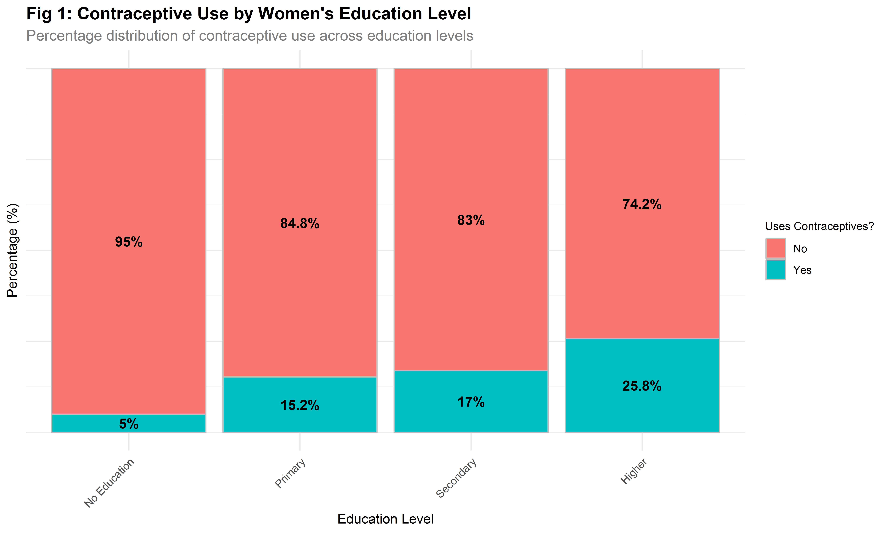
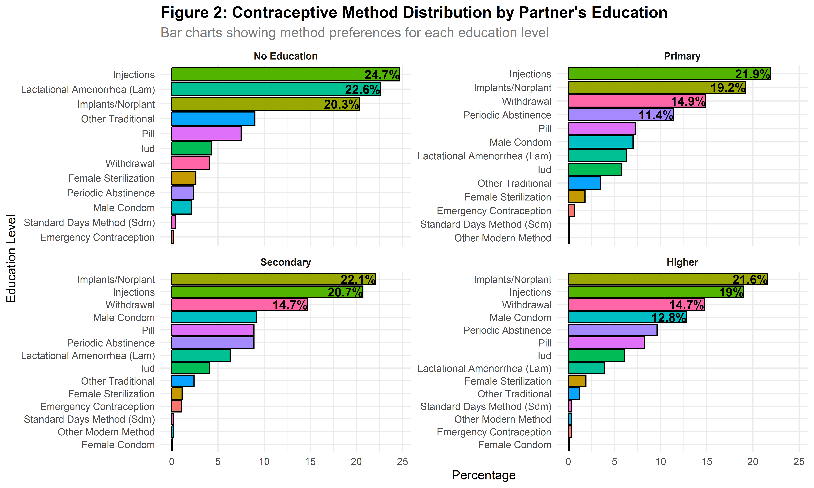
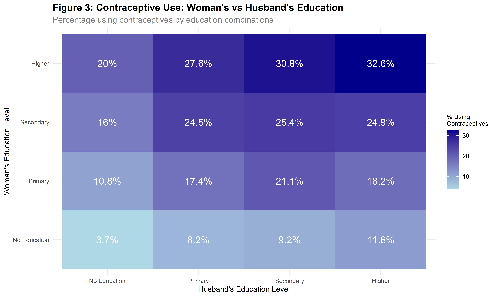
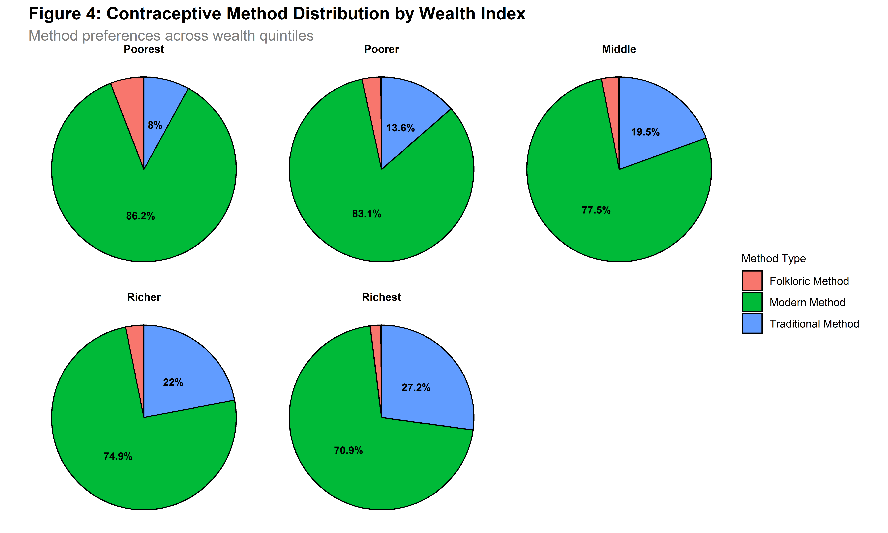
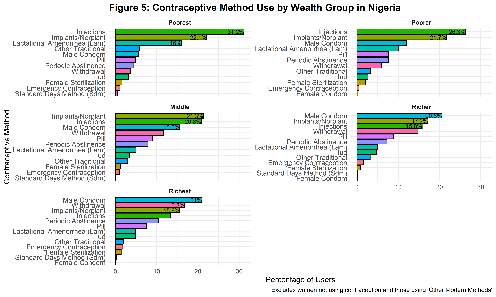
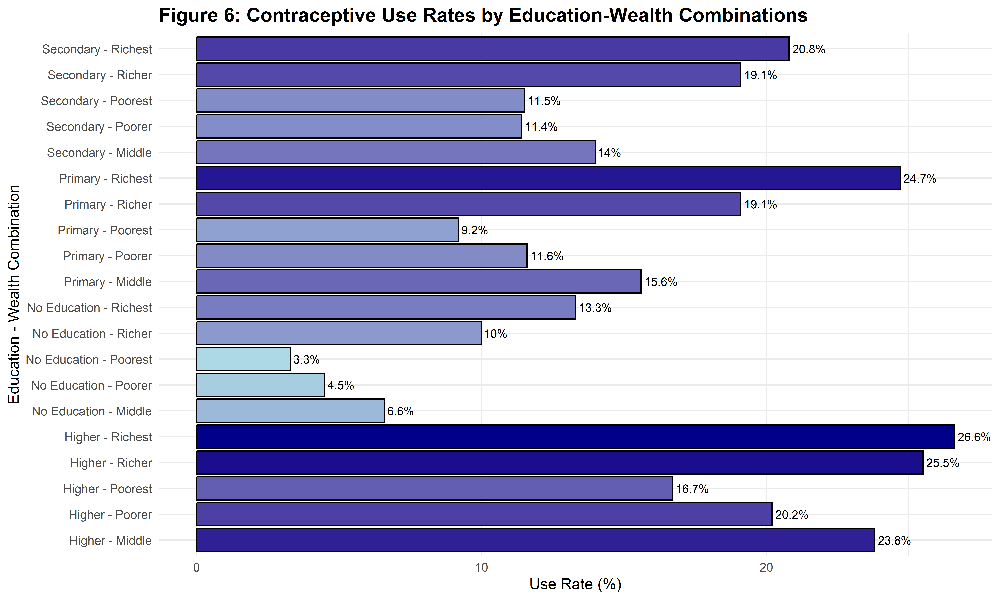

Contraceptive Choices Across Nigeria: How Education and Wealth Shape Family Planning Decisions
Introduction
Nigeria, as Africa’s most populous nation, faces significant challenges in family planning and reproductive health. Understanding the factors that influence contraceptive choices is crucial for developing effective public health policies and interventions. This analysis examines how socioeconomic factors, particularly education and wealth, shape contraceptive decisions among Nigerian women.
This study utilizes data from the 2018 Nigeria Demographic and Health Survey (DHS), specifically the Women’s Individual Recode (IR) dataset. The DHS program represents one of the most comprehensive and standardized data collection efforts on population, health, and nutrition in developing countries.
This analyses focuses on the relationships between women’s education levels, household wealth indices, partner education, and contraceptive method preferences.
Education and Contraceptive Use
Overall Contraceptive Use by Education Level
Education is often linked to health literacy and autonomy, which can influence reproductive choices. This analysis reveals a strong positive relationship between women’s education levels and contraceptive use.
Findings:
Women with higher education had the highest contraceptive use
(25.8%).Usage was lowest among women with no education
(5.0%).
Contraceptive Method Preferences by Education
Different education levels may influence awareness and access to various contraceptive methods. Therefore, this analysis was carried out to identify the single most commonly used method within each education category.
Findings:
Injections were most common
(28.4%)among women with no or primary education.Male condoms were more popular
(27.1%)among women with secondary or higher education
| Table 1: Most Popular Contraceptive Method by Female Education Level | ||
|---|---|---|
| Top choice for each education category | ||
| Education Level | Most Popular Method | Percentage (%) |
| No Education | Injections | 28.4 |
| Primary | Injections | 26.2 |
| Secondary | Male Condom | 20.9 |
| Higher | Male Condom | 27.1 |
Partner Education and Contraceptive Decisions
Partner’s Education Impact on Contraceptive Use
Male partners often influence family planning decisions in many Nigerian households.
Findings:
Contraceptive use increased with the partner’s education level.
Only
4.8%of women with uneducated partners used contraceptives, compared to25.9%with highly educated partners.
| Table 2: Contraceptive Use by Partner's Education Level | ||
|---|---|---|
| Impact of male partner's education on contraceptive decisions | ||
| Partner's Highest Education Level | Does Not Use Contraceptives (%) | Uses Contraceptives (%) |
| No Education | 95.2 | 4.8 |
| Primary | 83.9 | 16.1 |
| Secondary | 78.0 | 22.0 |
| Higher | 74.1 | 25.9 |
Partner’s Education and Method Choice
Educated partners may support or encourage the use of more modern or effective methods.
Findings:
Injections were preferred when the partner had no or primary education.
Implants/Norplant were more common with secondary or higher-educated partners.

Combined Education Analysis
This analysis was carried out to analyze the combined effect of education levels of both partners on the use of contraceptives.
Findings:
Households where both partners have higher education show the highest contraceptive use rates
Higher education in one partner may partially compensate for lower education in the other

Wealth and Contraceptive Access
Wealth Impact on Method Choice
Here, I examined how household wealth affects the types of contraceptives used.
Findings:
Modern contraceptive methods were the most commonly used across all wealth groups.
Usage of
modern methodsdeclined with increasing wealth — from86.2%among the poorest to70.9%among the richest.Traditional methoduse increased with wealth — from8.0%(poorest) to27.2%(richest), suggesting a preference shift among wealthier households.Folkloric methodswere rarely used, accounting for less than6%in all wealth groups.

Contraceptive Method Preferences by Wealth
Injections are the most used method among the poorest women
(42.3%)Male condom use increases with wealth, reaching
29.7%among the richest.Traditional methods become more popular with wealth, rising from 8.0% (poorest) to 27.2% (richest)
Folkloric methods remain rare across all wealth levels, never exceeding
6%.

Education and Wealth Interactions
Key Findings:
Contraceptive Use Increases with Both
EducationandWealthWomen with higher education and greater wealth show the highest contraceptive use rates
(26.6%)compared to only3.3%among poorest women with no education.

Conclusion
This analysis of the 2018 Nigeria DHS data reveals that contraceptive use in Nigeria is shaped not only by a woman’s own education and wealth but also significantly by her partner’s educational background. The findings highlight a complex interplay of socioeconomic factors that influence both the likelihood of contraceptive use and the type of method chosen.
Women with higher education and greater household wealth are significantly more likely to adopt family planning methods, with usage rates rising from just 3.3% among the poorest, uneducated women to 26.6% among the wealthiest, most educated. Education empowers women with health knowledge, decision-making autonomy, and increased access to modern reproductive services, while wealth improves affordability and method choice.
Crucially, the partner’s education level also plays a pivotal role. Women with highly educated partners are more than five times as likely to use contraceptives (25.9%) compared to those whose partners have no education (4.8%). In addition, partner education shapes method preferences—couples where the male partner has secondary or higher education are more inclined toward implants and other long-acting reversible contraceptives, whereas those with less educated partners tend to favor injectables. This underscores the importance of male involvement and support in reproductive health decisions and calls for gender-inclusive family planning education and outreach.
Interestingly, the wealthiest women show a rising preference for traditional methods, with usage increasing from 8.0% among the poorest to 27.2% among the richest. This suggests that among wealthier groups, cultural norms, concerns about side effects, or lifestyle preferences may influence choices even when modern methods are accessible.
Ultimately, the data show that education—of both women and their partners—and wealth are interdependent forces. Their combined presence creates an enabling environment for contraceptive uptake, while their absence reinforces reproductive inequality. Bridging this gap will require integrated policy efforts that expand access to quality education for both sexes, actively involve men in family planning conversations, and ensure that all Nigerians, regardless of socioeconomic status, have equitable access to a wide range of safe and acceptable contraceptive options.